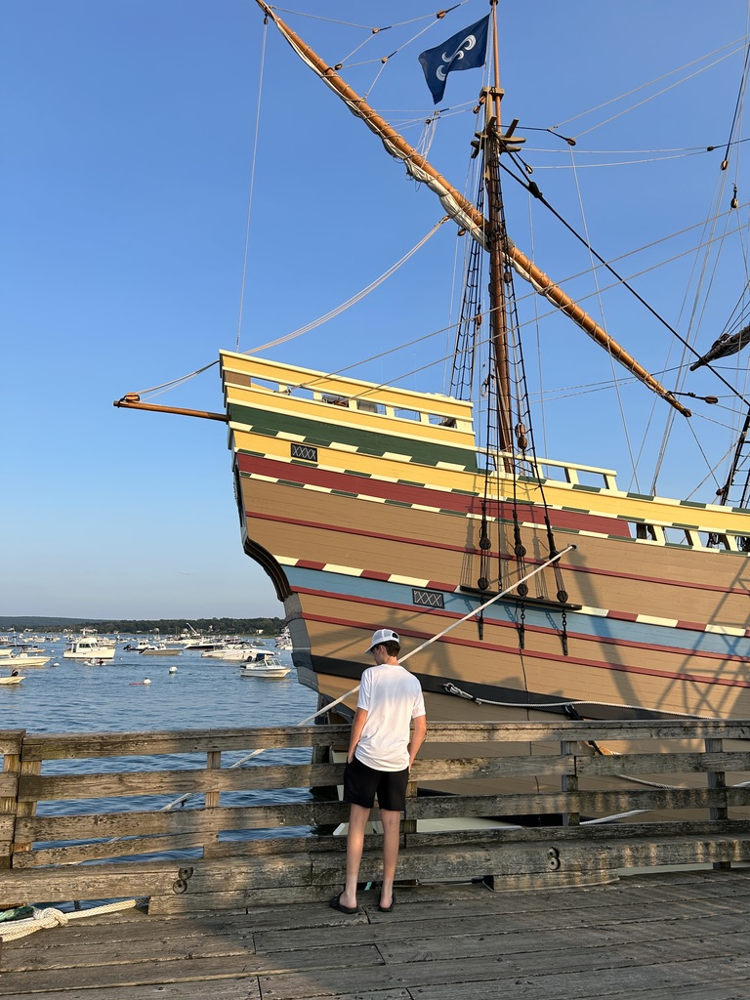

Who is Ethan Dunn?

I'm a 15 year old entrepreneur, content creator, and software builder. I've always been gifted, but I recently realized the potential of what I could do with those gifts.
For my entire life I've been advanced, always in the higher up math classes, always getting the highest scores in school, always been talented in sports, but one thing I realized was that my true passion is pursuing entrepreneurship. I want to do something great, really make an impact, and I feel that entrepreneurship is the way I can do this.
I knew I was made to be an entrepreneur ever since 5th grade when I was just making money selling candy to my classmates. In the past couple months though, I really ramped things up. I launched my first live web app for high school students that is free to use (Kovrio), started posting content to hopefully hit 10k followers on Instagram by the end of the year, and have just been having as much fun as possible building random technical projects and playing various sports.
Philippians 4:13, "I can do all things through Christ who strengthens me", is the verse I live by. I know I can't reach my goals alone, but with God, I know I can.
Reach out to me, I'm always open to meeting new people!